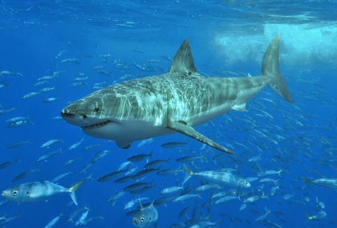
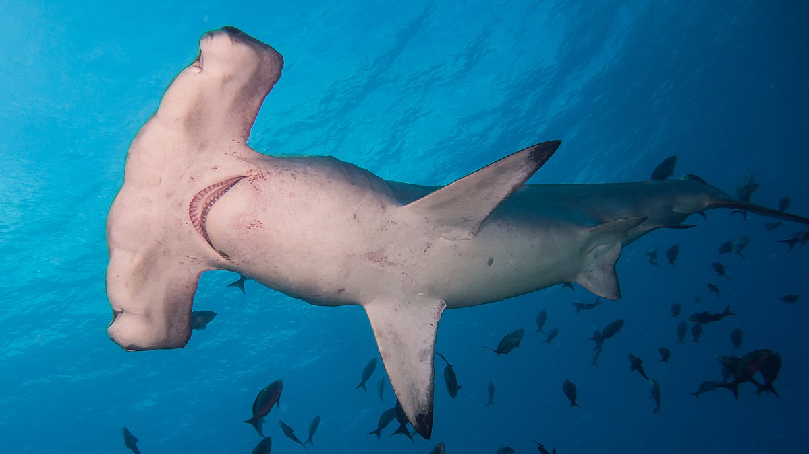

The blue shark (Prionace glauca), also known as the great blue shark, is a species of requiem shark, in the family Carcharhinidae, that inhabits deep waters in the world's temperate and tropical oceans. Averaging around 3.1 m (10 ft) and preferring cooler waters, the blue shark migrates long distances, such as from New England to South America. It is listed as Near Threatened by the IUCN. Although generally lethargic, they can move very quickly. Blue sharks are viviparous and are noted for large litters of 25 to over 100 pups. They feed primarily on small fish and squid, although they can take larger prey. Maximum lifespan is still unknown, but it is believed that they can live up to 20 years

The great white shark (Carcharodon carcharias), also known as the white shark, white pointer, or simply great white, is a species of large mackerel shark which can be found in the coastal surface waters of all the major oceans. It is notable for its size, with larger female individuals growing to 6.1 m (20 ft) in length and 1,905–2,268 kg (4,200–5,000 lb) in weight at maturity. However, most are smaller; males measure 3.4 to 4.0 m (11 to 13 ft), and females measure 4.6 to 4.9 m (15 to 16 ft) on average. According to a 2014 study, the lifespan of great white sharks is estimated to be as long as 70 years or more, well above previous estimates, making it one of the longest lived cartilaginous fishes currently known. According to the same study, male great white sharks take 26 years to reach sexual maturity, while the females take 33 years to be ready to produce offspring. Great white sharks can swim at speeds of 25 km/hr (16 mph) for short bursts and to depths of 1,200 m (3,900 ft). The great white shark has no known natural predators other than, on very rare occasions, the killer whale. It is arguably the world's largest-known extant macropredatory fish, and is one of the primary predators of marine mammals, up to the size of large baleen whales. This shark is also known to prey upon a variety of other marine animals, including fish, and seabirds. It is the only known surviving species of its genus Carcharodon, and is responsible for more recorded human bite incidents than any other shark. The species faces numerous ecological challenges which has resulted in international protection. The IUCN lists the great white shark as a Vulnerable species, and it is included in Appendix II of CITES. It is also protected by several national governments, such as Australia (as of 2018). The novel Jaws by Peter Benchley and its subsequent film adaptation by Steven Spielberg depicted the great white shark as a ferocious man-eater. Humans are not the preferred prey of the great white shark, but the great white is nevertheless responsible for the largest number of reported and identified fatal unprovoked shark attacks on humans although this happens very rarely (typically less than 10 times a year globally). Due to their need to travel long distances for seasonal migration and extremely demanding diet, it is not logistically feasible to keep great white sharks in captivity; because of this, while attempts have been made to do so in the past, there are no known aquariums in the world believed to house a live specimen

The tiger shark (Galeocerdo cuvier) is a species of requiem shark and the only extant member of the genus Galeocerdo. It is a large macropredator, capable of attaining a length over 5 m (16 ft 5 in). Populations are found in many tropical and temperate waters, especially around central Pacific islands. Its name derives from the dark stripes down its body, which resemble a tiger's pattern, but fade as the shark matures. The tiger shark is a solitary, mostly nocturnal hunter. It is notable for having the widest food spectrum of all sharks, with a range of prey that includes crustaceans, fish, seals, birds, squid, turtles, sea snakes, dolphins, and even other smaller sharks. It also has a reputation as a "garbage eater", consuming a variety of inedible, man-made objects that linger in its stomach. Though apex predators, tiger sharks are sometimes taken as prey by groups of killer whales. It is considered a near threatened species due to finning and fishing by humans. The tiger shark is second only to the great white in recorded fatal attacks on humans, but these events are still exceedingly rare.

The hammerhead sharks are a group of sharks that form the family Sphyrnidae, so named for the unusual and distinctive structure of their heads, which are flattened and laterally extended into a "hammer" shape called a cephalofoil. Most hammerhead species are placed in the genus Sphyrna, while the winghead shark is placed in its own genus, Eusphyra. Many, but not necessarily mutually exclusive, functions have been postulated for the cephalofoil, including sensory reception, manoeuvering, and prey manipulation. The cephalofoil gives the shark superior binocular vision and depth perception.[2] Hammerheads are found worldwide in warmer waters along coastlines and continental shelves. Unlike most sharks, some hammerhead species usually swim in schools during the day, becoming solitary hunters at night. Some of these schools can be found near Malpelo Island in Colombia, the Galápagos Islands in Ecuador, Cocos Island off Costa Rica, near Molokai in Hawaii, and off southern and eastern Africa

Megalodon (Otodus megalodon), meaning "big tooth", is an extinct species of mackerel shark that lived approximately 23 to 3.6 million years ago (mya), during the Early Miocene to the Pliocene. It was formerly thought to be a member of the family Lamnidae and a close relative of the great white shark (Carcharodon carcharias). However, it is now classified into the extinct family Otodontidae, which diverged from the great white shark during the Early Cretaceous. Its genus placement is still debated, authors placing it in either Carcharocles, Megaselachus, Otodus, or Procarcharodon. This is because transitional fossils have been found showing that megalodon is the final chronospecies of a lineage of giant sharks originally of the genus Otodus which evolved during the Paleocene. While regarded as one of the largest and most powerful predators to have ever lived, megalodon is only known from fragmentary remains, and its appearance and maximum size are uncertain. Scientists differ on whether it would have more closely resembled a stockier version of the great white shark, the whale shark (Rhincodon typus), the basking shark (Cetorhinus maximus) or the sand tiger shark (Carcharias taurus). Most estimates of megalodon's size extrapolate from teeth, with maximum length estimates up to 14.2–20.3 meters (47–67 ft) and average length estimates of 10.5 meters (34 ft). Estimates suggest their large jaws could exert a bite force of up to 108,500 to 182,200 newtons (24,400 to 41,000 lbf), Their teeth were thick and robust, built for grabbing prey and breaking bone. Megalodon probably had a major impact on the structure of marine communities. The fossil record indicates that it had a cosmopolitan distribution. It probably targeted large prey, such as whales, seals and sea turtles. Juveniles inhabited warm coastal waters and fed on fish and small whales. Unlike the great white, which attacks prey from the soft underside, megalodon probably used its strong jaws to break through the chest cavity and puncture the heart and lungs of its prey. The animal faced competition from whale-eating cetaceans, such as Livyatan and other macroraptorial sperm whales and possibly smaller ancestral killer whales. As the shark preferred warmer waters, it is thought that oceanic cooling associated with the onset of the ice ages, coupled with the lowering of sea levels and resulting loss of suitable nursery areas, may have also contributed to its decline. A reduction in the diversity of baleen whales and a shift in their distribution toward polar regions may have reduced megalodon's primary food source. The shark's extinction coincides with a gigantism trend in baleen whales.
Please Rate this website: